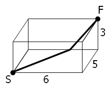

A spider, S, sits in one corner of a cuboid room, measuring $6$ by $5$ by $3$, and a fly, F, sits in the opposite corner. By travelling on the surfaces of the room the shortest "straight line" distance from S to F is $10$ and the path is shown on the diagram.

However, there are up to three "shortest" path candidates for any given cuboid and the shortest route doesn't always have integer length.
It can be shown that there are exactly $2060$ distinct cuboids, ignoring rotations, with integer dimensions, up to a maximum size of $M$ by $M$ by $M$, for which the shortest route has integer length when $M = 100$. This is the least value of $M$ for which the number of solutions first exceeds two thousand; the number of solutions when $M = 99$ is $1975$.
Find the least value of $M$ such that the number of solutions first exceeds one million.